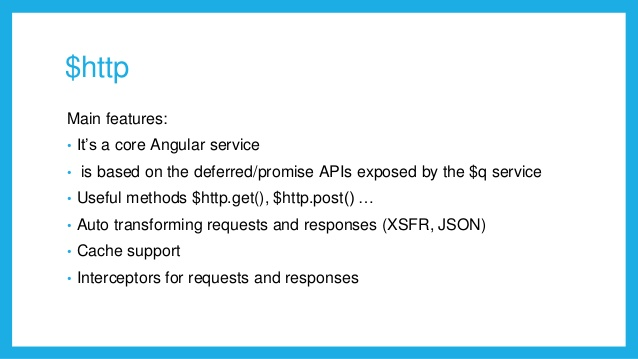
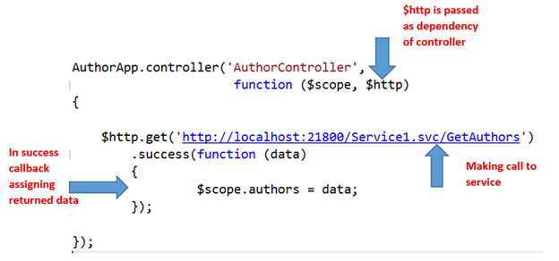
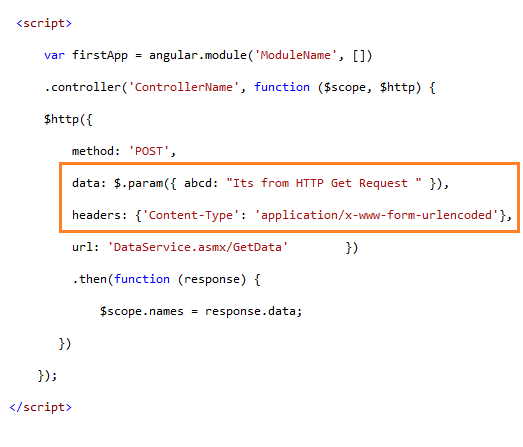

The $http service is used to make and process Ajax requests, which are standard HTTP requests that are performed asynchronously.
The sample comes from <Pro AngularJS>.
Declare a dependency on the $http service in the controller.
The $http service defines six convenience method:
get(url, config)
post(url, data, config)
delete(url, config)
put(url, data, config)
head(url, config)
patch(url, config) *?
jsonp(url, config)
The above methods returns a promise object, and it has three methods:
success(fn) - Invokes the specified function when the HTTP request has successfully completed (Note: extended specially for $http, may be deprecated)
error(fn) - Invokes the specified function when the request does not complete successfully (Note: extended specially for $http, may be deprecated)
then(successCallback, errorCallback, notifyCallback) - from promise
catch(errorCallback) - from promise
finally(callback) - from promise
The success function is passed the data that the server sends.
The error function is passed a string that describes the problem that occurred.
If the response from the server is JSON data, then AngularJS will parse the JSON to create JavaScript objects and pass them to the success function automatically.
The then method provides access to more detailed information about the response from the server.
The object that the then method passes to its success and error functions defines the following properties:
data - Returns the data from the request
status - Returns the HTTP status code returned by the server
headers - Returns a function that can be used to obtain headers by name
config - The configuration object used to make the request
The methods defined by the $http service all accept an optional argument of an object containing configuration settings:
data - Sets the data sent to the server. If you set this to an object, AngularJS will serialize it to the JSON format.
headers
method
params - Used to set the URL parameters. Set params to an object whose property names and values correspond to the parameters you want to include.
timeout
transformRequest - Used to manipulate the request before it is sent to the server.
transformResponse - Used to manipulate the response when it arrives from the server. Note: AngularJS defines two built-in transformations; outgoing data is serialized into JSON, and incoming JSON data is parsed into JavaScript objects.
url
withCredentials
xsrfHeaderNamexsrfCookieName
cache
You can define default settings for Ajax requests through the provider for the $http service, $httpProvider.
The $httpProvider also provides a feature called request interceptors.
$http is good for quick retrieval of server-side data that doesn't really need any specific structure or complex behaviors. We will talk about $resource, Kris Kowal's Q, $q and Restangular shortly.



Reference
Pro AngularJS Chapter 20: Services for Ajax and Promises
Professional AngularJS Chapter 8: Server Communication